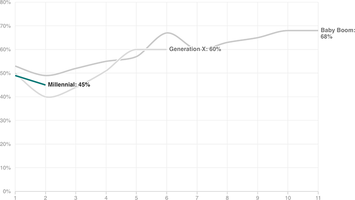

Historically, Turnout Tends To Increase As Voters Age
CIRCLE defined a generation’s “first” election as the first presidential election in which everyone 18 to 24 years old could vote. For baby boomers, this was 1972 (George McGovern and Richard Nixon); for Generation Xers, 1992 (George H.W. Bush and Bill Clinton); and for Millennials, 2008 (John McCain and Barack Obama).
